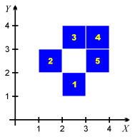
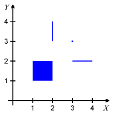
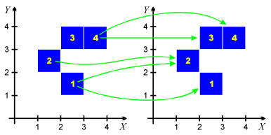
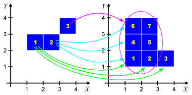
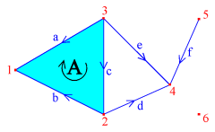
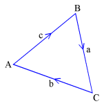
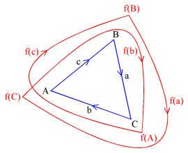

All the files used by the programs in the homology package (except for the BMP files) are text files which contain human-readable definitions of the data structures they represent.
In each input text file, the user can place his or her own comments. Every semicolon ';' marks the beginning of a comment - the remaining part of the line, including the semicolon, is ignored by the programs. Note that the programs themselves add some comments to the data they write to files. The user must be aware of this fact and ignore these comments or use them for their own purpose.
The so-called white characters (spaces, tabulators and end-of-lines) are treated as separators of words and are ignored wherever appropriate to allow for aesthetic formatting of the data with nice indents and superfluous empty lines.
In this page, a few specific examples are shown to illustrate the data file structures better than the abstract descriptions. For more complicated examples, the reader is kindly referred to the examples provided with the package.
Each n-dimensional (hyper)cube is assumed to have the edges of length 1 and vertices in the points whose all coordinates are integer. Each cube is represented by the vertex with minimal coordinates. In the text files, the coordinates must be enclosed in parentheses and separated with spaces or commas.
For backwards compatibility, in the output data all the programs from the Homology package precede the list of cubes with the word "dimension" followed by an integer number indicating the space dimension. However, in the input files every line beginning with the word "dimension" is ignored by the programs, because the space dimension is now determined directly from the number of coordinates appearing in the definition of each (hyper)cube.
For example, the set consisting of the five squares shown in the picture to the right can be encoded in the text form as follows:
; definition of the cubes ; illustrated in the picture dimension 2 (2,1) (1,2) (2,3) (3,3) (3,2)
Some of the programs in the package (currently probably only homcubes) are able to read the full cubical sets in which cubes are defined just by space-separated sequences of numbers, one cube per line. This feature was requested by some people using Matlab. The above-mentioned set of cubes would then be defined as the following text file:
2 1 1 2 2 3 3 3 3 2
Numeric encoding of cubes is also possible, as illustrated in the example num. To save the space, one can use integer numbers in the input files to refer to (hyper)cubes defined earlier. These numbers begin with 1 and refer to the cubes in the order they were read by the program from the input files or created during the computations. Be careful not to use numbers which are out of range. In the example above, the cube defined by "(2,1)" is assigned the number 1, the cube "(1,2)" receives the number 2, and so on, as indicated in the picture. In order to distinguish from the format in which the cubes may be written without parentheses, in some situations one must either precede each number with the '#' character, or place each number in a separate line. See the example num for details.
The feature of numeric encoding is especially useful for the program homcubes and allows to decrease the size of the input text files, especially the file with the definition of a combinatorial multivalued map. Since the order in which the program reads input files is not 100% obvious and may change in the future, it is recommended to use the option -c filename to read through the given file in order to fix the order of cubes in a deterministic way.
Cubical sets are sets that contain (hyper)cubes of dimension that is not necessarily maximal, embedded in the common space Rn. Such cubes are referred to in the Homology Package as cubical cells. Each of these cells can be defined in two ways, either by their opposite vertices, one with the minimal coordinates, and the other with the maximal ones, or as a carthesian product of intervals.
In the example illustration to the right, there are four elementary cubes: a 2-dimensional square, two 1-dimensional segments and one 0-dimensional point. Using the first discussed convention, they can be defined in the text file in the following way:
[(1,1) (2,2)] ; the square [(3,2) (4,2)] ; the horizontal line segment [(2,3) (2,4)] ; the vertical line segment [(3,3) (3,3)] ; the pointUsing the second convention, the same objects can be defined as follows:
[1,2] x [1,2] [3,4] x [2] [2] x [3,4] [3] x [3]Note that the intervals are closed and can be written also using parentheses (), braces {} or angular brackets <>. Each closed interval of length zero can be written either in the form of an interval, or by specifying only that point, e.g. "[3]" is equivalent "[3,3]", as shown above.
A combinatorial multivalued map is a multivalued map which assignes to each (hyper)cube in its domain a set of (hyper)cubes, possibly empty. Such a map can be defined in the Homology package in two ways. The first way, a more general one, defines each assignment in the form of a line containing the argument, then an immitation of an arrow consisting of a dash and the "greater than" sign, and finally the set assigned to the argument in braces {}. The elements in this set are separated by spaces or commas. Note that the braces must appear even if the set is empty.
For example, consider the combinatorial multivalued map depicted in the illustration to the right. Cube no. 1 is mapped to the pair of cubes, no. 1 and 2. Cube no. 2 is mapped to cube no. 2, cube no. 3 is mapped to the empty set, and cube no. 4 is mapped to the pair of cubes no. 3 and 4. This map can be defined in the text format as follows:
(2,1) -> {(2,1) (1,2)}
(1,2) -> {(1,2)}
(2,3) -> {}
(3,3) -> {(2,3),(3,3)}
Another way of defining a combinatorial multivalued map was introduced by M. Mazur and J. Szybowski in their program chmap which is now part of the Homology package. This way is more restrictive, contains an obligatory text header and allows to define only maps which assign a rectangular set (a convex set) to each cube in the domain. The file should begin with the line containing the phrase "Space Dimension:" followed by an integer indicating the space dimension. The next line should contain the phrase "Number Of Primitive Arguments:" followed by the number of elements in the domain of the map. The third line should contain the phrase "Map: AlmostPerfect". The next line should contain the phrase "Primitive Argument" followed by the word "Value". Then the map is defined by providing the domain cube written in the form of a cubical cell followed by its image (set of cubes) written in the same form as a cubical cell, that is, by providing the two opposite vertices of the rectangular set: the first vertex should contain the minimal coordinates of the set, and the other one---maximal. Finally, at the end of the file there should be the word "END". Note: All the programs except for chmap actually ignore the numeric information contained in the header, but this header must exist in order to distinguish the two data formats.
Unfortunately, the example map defined above cannot be written in the form discussed here, so let's consider another map, illustrated in the picture to the right. Here cube no. 1 on the left is mapped to the cubes no. 1, 2 and 3 on the right, cube no. 2 is mapped to the cubes 1, 4 and 6, and cube no. 3 is mapped to all the cubes except for 3. The actual text definition of this map would be as follows:
Space Dimension: 2 Number Of Primitive Arguments: 3 Map: AlmostPerfect Primitive Argument Value [(1,2) (2,3)] [(1,1) (4,2)] [(2,2) (3,3)] [(1,1) (2,4)] [(3,3) (4,4)] [(1,1) (3,4)] ENDNote that this format can save some space if the images of single cubes are very large. Just for comparison, the definition of the same map in the former format is as follows:
(1,2) -> {(1,1) (2,1) (3,1)}
(2,2) -> {(1,1) (1,2) (1,3)}
(3,3) -> {(1,1) (2,1) (1,2) (2,2) (1,3) (2,3)}
In order to define an abstract simplicial complex, one must first enumerate all the vertices, i.e., assign an integer number to each vertex (see the example to the right). Then each simplex is defined as an unordered set of vertices and is encoded in the text file by braces (or brackets, or parentheses) which embrace the list of vertices' numbers separated by spaces or commas. The order of vertices is not important, they are sorted by the software.
For example, the simplicial complex illustrated in the picture might be defined as follows:
{1,2,3}
{2,4}
{3,4}
{5,4}
{6}
In this example the entire simplicial complex is not listed,
but the missing simplices can be deduced automatically
as faces of the simplices listed.
This is one of the features of the program homsimpl.
A finitely generated free chain complex can be defined by specifying the number of generators at each level (0 through n), as well as a formula for the boundary of each generator as a combination of the other generators.
In a text file, the definition of a chain complex must begin with the phrase "chain complex". Then the maximal nontrivial level must be indicated with the phrase "max dimension" followed by the appropriate integer number. The generators at each level must be labeled with words containing none of the white characters: space, tabulator, end-of-line, not beginning with any of the characters +, -, =, #, *, :, ; (or---better yet---not containing them), and different from the words "boundary", "dimension" and "image". The definition of the boundary operators begin with the declaration of the level of their domain given by the word "dimension" followed by an integer number indicating that level. If necessary, the level number can be followed by number of generators at this level. If not, the number of generators is assumed to be the number of generators that appear in the definitions of the boundary operators. The boundary of each generator is defined in a line beginning with the word "boundary" (one can use the symbol '#' as an abbreviation for this) followed by the label of the generator and the formula for its boundary which can be constructed with the use of the symbols '+', '-', '*' (the latter stands for multiplication) and integer numbers (but without parentheses!). We would like to remark that labels can be repeated at different levels; in particular, the generator labeled 'X' at level 2 will not be mistaken for the generator labeled 'X' at level 1 if it exists. Moreover, the labels can just be positive integer numbers---there is no risk of being mistaken for coefficients. Note that it is necessary to separate all the words in the text file with spaces; in particular, a space between '#' and generator name is necessary, and the text "A+B-C" will be treated as a single generator label, in contrast to "A + B - C" which one might have probably intended.
If time and memory concerns are important, one can define the chain complex in the so-called digital way (and invoke homchain with the argument -d). In this definition, it is important that the boundaries are defined in the ascending order, and the number of generators is always given explicitely (including dimension 0). At each level, the labels of the generators are assumed to be integer numbers beginning with 1.
For example, consider the chain complex of the simplicial complex discussed earlier. In the picture to the right, all the simplices have been labeled and an arbitrarily chosen orientation of the 1- and 2-dimensional simplices has been indicated with arrows. The actual text definition of this chain complex might be as follows. (Note that all the characters '=' and ':' which appear in the examples below are optional.)
chain complex max dimension = 2 dimension 0: 6 dimension 1 boundary a = 1 - 3 boundary b = 1 - 2 boundary c = 2 - 3 boundary d = 4 - 2 boundary e = 4 - 3 boundary f = 4 - 5 dimension 2 boundary A = -a + b + cNote that we must define explicitely the number of generators at level 0, because in this way we can include the generator labeled "6" since it does not appear in any boundary formula (another way would be to define its boundary as a zero.)
In order to show how flexible the labels of generators can be, we show another text definition of the above chain complex, but this time we use the simplices as labels. We list all the 0-dimensional simplices without boundaries, although it would be enough only to list the last simplex, because all the others appear in the formulas for boundaries of 1-dimensional simplices. Note that, unlike in the definition of a simplicial complex, the order of vertices is important here, because the names of the generators are treated as text strings, so "{4,5}" is now different from "{5,4}".
chain complex
max dimension = 2
dimension 0
# {1}
# {2}
# {3}
# {4}
# {5}
# {6}
dimension 1
# {1,3} = {1} - {3}
# {1,2} = {1} - {2}
# {2,3} = {2} - {3}
# {2,4} = {4} - {2}
# {3,4} = {4} - {3}
# {4,5} = {4} - {5}
dimension 2
# {1,2,3} = -{1,3} + {1,2} + {2,3}
Once two chain complexes are defined, a chain map between them is defined in a similar manner. The text file begins with the phrase "chain map", and then the images of generators at each level are defined in a similar way to the boundary operators, but instead of the word "boundary" one is supposed to use the word "image" (the symbol '#' can also be used for short).
For example, if the chain complex of the boundary of a triangle in the plane is defined as illustrated in picture to the right:
chain complex max dimension = 1 dimension 1 boundary a = C - B boundary b = A - C boundary c = B - A then a chain map that corresponds to the double winding of this figure around itself may look as follows (compare the picture to the right):
chain map dimension 1 image a = a + b image b = c + a image c = b + c dimension 0 image A = C image B = B image C = A